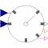

RotationalClockEvent clock generating a clock tick each time an observed input angle changed for a rotational-interval given as variable input |

|
Diagram
{kind=link}
Information
This information is part of the Modelica Standard Library maintained by the Modelica Association.
For a simple example cf. the rotational sampling example.Parameters (2)
| useSolver |
Value: false Type: Boolean Description: = true, if solverMethod shall be explicitly defined |
|---|---|
| solverMethod |
Value: "ExplicitEuler" Type: SolverMethod Description: Integration method used for discretized continuous-time partitions |
Connectors (5)
| y |
Type: ClockOutput |
|
|---|---|---|
| angle |
Type: RealInput Description: Input angle observed for generating clock ticks. |
|
| direction |
Type: IntegerOutput Description: Rotation direction (sign: +1 or -1). Sampled with the provided clock signal 'y'. |
|
| direction_changed |
Type: BooleanOutput Description: = true, if the rotation direction of the observed angle changed since the last tick of y', otherwise false. Sampled with the provided clock signal y. |
|
| trigger_interval |
Type: RealInput Description: Rotational-interval the input angle must be changed to trigger the next clock tick |
Components (11)
| y_clock |
Type: EventClock |
|
|---|---|---|
| update_offset |
Type: SampleClocked |
|
| angular_offset |
Type: Hold |
|
| sub |
Type: Add |
|
| less |
Type: Less |
|
| abs2 |
Type: Abs |
|
| abs1 |
Type: Abs |
|
| direction_sign |
Type: Sign |
|
| cast |
Type: RealToInteger |
|
| changed |
Type: IntegerChange |
|
| update_direction |
Type: SampleClocked |
Used in Examples (2)
|
Modelica.Clocked.Examples.Elementary.ClockSignals Simple example of a rotational clock with variable trigger interval and switching rotation-direction. |
|
|
Modelica.Clocked.Examples.Elementary.ClockSignals Simple example of conjunctive and disjunctive logical clocks, combining clock signals to derive new event driven clocks. |
Used in Components (1)
|
Modelica.Clocked.ClockSignals.Clocks.Rotational Event clock generating a clock tick each time an observed input angle changed for a certain, constant rotational-interval |